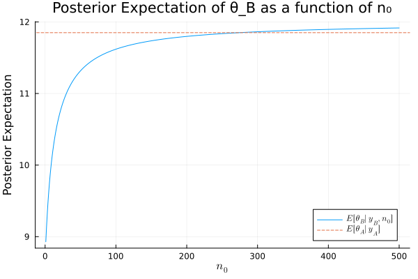
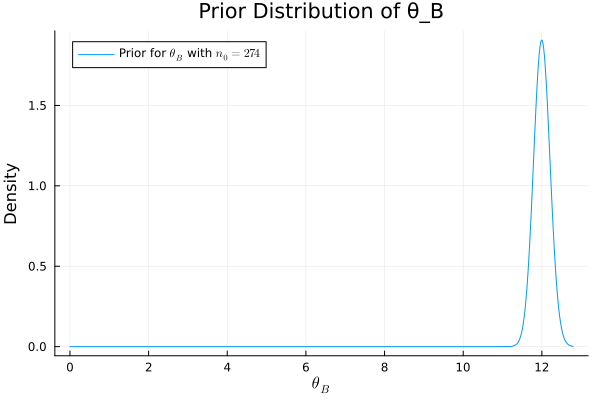

Exercise 3.3 Solution Example - Hoff, A First Course in Bayesian Statistical Methods
標準ベイズ統計学 演習問題 3.3 解答例
Answer
a)
answer
using Distributions using LaTeXStrings using Plots using StatsPlots y_A = [12, 9, 12, 14, 13, 13, 15, 8, 15, 6] y_B = [11, 11, 10, 9, 9, 8, 7, 10, 6, 8, 8, 9, 7] n_A, sy_A = length(y_A) , sum(y_A) n_B, sy_B = length(y_B) , sum(y_B) a₀_A = 120 b₀_A = 10 a₀_B = 12 b₀_B = 1 # Posterior distributions dist_A = Gamma(a₀_A + sy_A, 1/(b₀_A + n_A)) dist_B = Gamma(a₀_B + sy_B, 1/(b₀_B + n_B))
mean_A = (a₀_A + sy_A) / (b₀_A + n_A) mean_B = (a₀_B + sy_B) / (b₀_B + n_B) ["Posterior mean of A: $mean_A" , "Posterior mean of B: $mean_B"]
| Posterior mean of A: 11.85 |
| Posterior mean of B: 8.928571428571429 |
var_A = (a₀_A + sy_A) / (b₀_A + n_A)^2 var_B = (a₀_B + sy_B) / (b₀_B + n_B)^2 ["Posterior variance of A: $var_A" , "Posterior variance of B: $var_B"]
| Posterior variance of A: 0.5925 |
| Posterior variance of B: 0.6377551020408163 |
# 95% quantile-based confidence intervals quantile_A = quantile.(dist_A, [0.025, 0.975]) quantile_B = quantile.(dist_B, [0.025, 0.975]) ["Posterior 95% quantile of A: $quantile_A" , "Posterior 95% quantile of B: $quantile_B"]
| Posterior 95% quantile of A: [10.389238190941795, 13.405448325642006] |
| Posterior 95% quantile of B: [7.432064219464302, 10.560308149242365] |
b
answer
\(\theta_A\) の事後期待値は、a) の結果から \(E[\theta_A|y_A] = 11.85\) である。一方、\(\theta_B \) の事後期待値は \(n_0\) の関数として次のように表される。
(The posterior expectation of \(\theta_A\) is \(E[\theta_A|y_A] = 11.85\) from part a). The posterior expectation of \(\theta_B\) as a function of \(n_0\) is given by:
\[ E[\theta_B|y_B, n_0] = \frac{12n_0 + \sum y_B}{n_0 + n_B} = \frac{12n_0 + 113}{n_0 + 13} \]
これらの期待値が等しくなる \(n_0\) を求めると、
(Solving for \(n_0\) where these expectations are equal:)
\begin{align*} 11.85 &= \frac{12n_0 + 113}{n_0 + 13} \\ 11.85(n_0 + 13) &= 12n_0 + 113 \\ 11.85n_0 + 154.05 &= 12n_0 + 113 \\ 41.05 &= 0.15n_0 \\ n_0 &= \frac{41.05}{0.15} \approx 273.67 \end{align*}したがって、\(n_0 \approx 274\) のとき、2つの期待値はほぼ等しくなる。
Thus, when \(n_0 \approx 274\), the two expectations are approximately equal.)
list_n₀ = 1:500 exp_θ_B = n -> (a₀_B * n + sy_B) / (n + n_B) plot(list_n₀, exp_θ_B.(list_n₀), label=L"E[\theta_B|y_B, n_0]", xlabel=L"n_0", ylabel="Posterior Expectation", legend=:bottomright, title="Posterior Expectation of θ_B as a function of n₀") hline!([mean_A], linestyle=:dash, label=L"E[\theta_A|y_A]") savefig("./ch3/fig/ex3-3b1.svg") "[[file:./fig/ex3-3b1.svg]]"

上の図から、\(n_0\)が大きくなるにつれて、\(\theta_B\)の事後期待値は事前期待値である12に近づいていくことがわかる。 \(n_0 \approx 274\) で2つの事後期待値はほぼ等しくなる。このときの\(\theta_B\)の事前分布は以下の通りである。
(From the figure above, it can be seen that as \(n_0\) increases, the posterior expectation of \(\theta_B\) approaches its prior expectation of 12. The two posterior expectations become almost equal at \(n_0 \approx 274\). The prior distribution of \(\theta_B\) at this time is as follows.)
n₀_val = 274 prior_B_dist = Gamma(a₀_B * n₀_val, 1/n₀_val) plot(prior_B_dist, label=L"Prior for $\theta_B$ with $n_0=274$", xlabel=L"\theta_B", ylabel="Density", legend=:topleft, title="Prior Distribution of θ_B") savefig("./ch3/fig/ex3-3b2.svg") "[[file:./fig/ex3-3b2.svg]]"

上の分布を見ればわかるように、 \(\theta_B\)の事後期待値が\(\theta_A\)の事後期待値と同じくらいになるためには、「\(\theta_B\)の平均は12である」という強い信念を反映した事前分布が必要となる。 \(n_0\)は事前分布の「サンプルサイズ」と解釈でき、これが大きいほど、事前情報がデータによる更新を上回り、事後期待値は事前期待値に近づく。
(As can be seen from the distribution above, in order for the posterior expectation of \(\theta_B\) to be similar to that of \(\theta_A\), a prior distribution reflecting a strong belief that “the mean of \(\theta_B\) is 12” is required. \(n_0\) can be interpreted as the “sample size” of the prior distribution. The larger \(n_0\) is, the more the prior information outweighs the update by the data, and the posterior expectation approaches the prior expectation.)
c
answer
日本語
B 系統のマウスは A 系統のマウスと関連性があるとされているので、 A 系統のマウスについての腫瘍数の情報は B 系統のマウスについての腫瘍数の事前情報になり得る。よって、\(p(\theta_A, \theta_B) = p(\theta_A) \times p(\theta_B)\)という仮定は妥当ではなく、 B 系統のマウスと A 系統のマウスの関連の度合いに関する信念のパラメータ\(n_0\)を導入し、 \(p(\theta_B | \theta_A, n_0) = \text{gamma}(E[\theta_A] \times n_0, n_0)\) などという形でモデル化するのが妥当であると考えられる。また、A系統のマウスに関するデータが観測されたあとに B 系統のマウスに関する推測を行う場合には、 \(\theta_B\)の事前期待値に\(\theta_A\)の事後期待値を用いるようなモデリングも可能。
English
The B strain of mice is said to be related to the A strain of mice, so information about the number of tumors in A strain mice can serve as prior information about the number of tumors in B strain mice. Therefore, the assumption \(p(\theta_A, \theta_B) = p(\theta_A) \times p(\theta_B)\) is not valid, and it is reasonable to introduce a parameter \(n_0\) that represents the degree of correlation between the B strain mice and the A strain mice, and model it in the form of \(p(\theta_B | \theta_A, n_0) = \text{gamma}(E[\theta_A] \times n_0, n_0)\). Also, when making inferences about the B strain mice after observing data about the A strain mice, it is possible to model it using the posterior expectation of \(\theta_A\) as the prior expectation of \(\theta_B\).